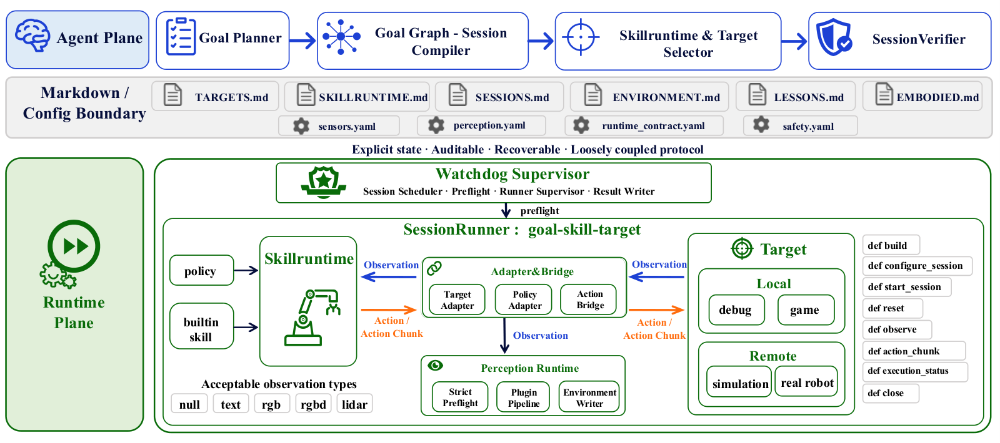

PhyAgentOS
一次控制结束只产生执行证据；是否完成任务，要由独立的语义验收决定。
PhyAgentOS: A Self-Evolving Operating System for Embodied Agents with Decoupled Cognitive Planning and Physical Execution
RoboCasa365 target50：π₀.₅ 首次 17.6%，经过验证触发的恢复后 26.8%；应同时看到增加的尝试。
01这篇要解决什么？
当一个系统接入很多机器人和策略，“函数返回了”会被误当成“任务完成了”。PhyAgentOS 将认知规划与物理执行解耦，用 session 描述目标、前置条件、执行边界和验收标准，让不同后端沿同一条生命周期运行。
02先看一个场景
指令是把杯子从桌上取回来。夹爪到达位姿、闭合，控制器正常退出，函数返回了成功——可杯子还留在桌上。如果系统把“控制器退出”当成“任务完成”，这次失败就再也没有机会被发现。
03方法怎样运转？

- 01
把一句请求编译成带验收标准的 session
Agent 层做三次递进的确定：Goal Planner 把意图解析成任务目标，并标出执行期间必须保持不变的约束；Goal Graph 与 Session Compiler 把目标拆成带依赖的子任务结构，每个可执行单元编译成一个 session；SkillRuntime-Target Selector 按所需能力、观测模态、动作语义与设备约束，决定这个 session 用哪种执行方式、在哪台目标上跑。session 契约至少写明任务目标、选定的 runtime 与 target、前置条件、执行边界和验收标准，记在 SESSIONS.md 里。编译不是只看用户那句话：ContextBuilder 会把环境状态、之前的尝试、可用能力与检索到的教训一起带上。
- 02
Runtime 先做预检，再进入受控执行
WatchdogSupervisor 是唯一的监督入口：它领走待执行的 session，先做兼容性预检，判断请求的观测模态、动作表示、策略端点、设备能力、时序约束与安全配置能否拼成一条合法执行路径，结果物化为 AdapterPlan（指明需要的 PolicyAdapter、TargetAdapter 与 ActionBridge 链）与 TargetToolManifest（列出本次 session 被允许调用的目标操作）。拼不出合法路径的 session 在拿到设备访问权之前就被拒。之后 SessionRunner 负责这次交互的生命周期；监督者只管心跳、超时与终止结果回写，不进入观测—动作回路。
- 03
两条执行流，同一个证据出口
PolicySkillRuntime 给连续控制策略用：观测契约（语言、RGB 或深度、机器人状态、执行历史）由 PolicyAdapter 转成模型输入，模型输出转回标准动作或 action chunk，Action Runtime 负责 chunk 缓冲、控制频率、截断、中断与重规划边界，ActionBridge 做坐标转换、维度投影与限幅，TargetAdapter 再编成设备原生接口。BuiltinSkillRuntime 给工具式任务用：没有独立策略服务，Agent 通过受控句柄逐步调用 observe、reset、invoke_tool、step、query_state 这类被清单过滤过的操作。两条流的决策位置不同，但都从 session 创建、受同一个监督者管、终止于同一种结构化证据包。
- 04
验收由 SessionVerifier 独立判定
控制器正常退出不等于任务完成，因此 runner 交出去的是证据而不是成功标签。验证器读的是一整包东西：任务定义与验收标准、本次 session 保留的初始与终止观测、对应的 ENVIRONMENT.md 快照、动作—观测历史，以及设备侧的事件或指标。之所以一定要初始状态，是因为多数成功描述的是一次变化，只看终止画面证明不了杯子被移动过、柜门被打开过。它返回 success / failure / replan 三种裁决，接口背后可以是确定性谓词、任务专用评估器、多模态模型或工具辅助复核，论文固定的是证据模式与裁决含义，而不是某一个模型。
- 05
replan 开新 session，验证过的才进记忆
判 replan 时原来那次尝试保持不可变，系统另编译一个子 session，带上更新后的前置条件、设备状态或策略，父子关系与两次裁决都留在记录里；每条裁决连同验证器配置与证据引用追加写入尝试记录，后来的结果不会覆盖先前的。经验按六步闭环沉淀：执行、验证、诊断、修订、再验证，只有再验证通过之后才 consolidate。知识分两个口子存：KNOWLEDGE.md 存验证过的成功模式与其适用条件、来源 runtime 与 target；LESSONS.md 存失败目标、相关证据、诊断出的原因、试过的修正，以及这个修正后来有没有被裁决支持——只提出过、没被验证的猜想不算经验。检索时按当前目标、环境状态、设备类型与风险因素查，并连同来源与适用范围一起注入。
session = compile(goal, preconditions, limits, acceptance, runtime, target) # 写入 SESSIONS.md
plan = watchdog.preflight(session) # 模态 / 动作表示 / 端点 / 安全，拼不通就拒
if plan is None: reject(session)
evidence = runner.execute(session, plan) # 高频控制留在执行层，返回证据而非成功标签
# evidence = 初始观测 + 终止观测 + ENVIRONMENT 快照 + 动作观测历史 + 设备事件
verdict = verifier(goal_and_acceptance, s_0, s_T, trace, history)
attempts.append((verdict, evidence_ref, verifier_config)) # 追加写，旧裁决不被覆盖
if verdict == success:
knowledge.add(pattern, applicable_conditions, provenance)
elif verdict == replan:
child = compile(revised_goal, from_state=current_physical_state, parent=session)
# 父尝试不可变，子 session 重新走同一条 Watchdog - Runner - Verifier 路径
else:
lesson = diagnose(evidence) # 修正被后续裁决支持，才写进 LESSONS方法与结果的原文定位见本页引用。
04跟着这个场景走一遍
教学推演：回到上面的场景。第一步，Agent 层把这句话编译成一个 session：目标写成杯子离开桌面并随末端移动，前置条件是杯子在视野内、夹爪空着，执行边界给定步数上限，验收标准据此写成可判定的形式；同时选定用连续控制策略跑，目标设备是这台机械臂。第二步，WatchdogSupervisor 领走它做预检，确认这条策略要的观测模态这台设备能提供、动作表示能经 ActionBridge 转到设备接口、安全配置齐备，生成 AdapterPlan 之后才放行。第三步，SessionRunner 进入观测—推理—动作循环，策略输出 action chunk，经限幅与坐标转换发给设备；夹爪到达指令位姿并闭合，控制器按自己的终止条件正常退出。第四步是关键：runner 交出去的是证据包，不是一个成功标签。验证器把初始观测、终止观测、ENVIRONMENT.md 的前后快照和动作历史放在一起比，发现杯子的位置关系没变——它还在桌上——于是拒绝接受这次取杯。第五步，如果证据支持换个方式继续，裁决是 replan：第一次尝试原样留在记录里，系统另编译一个子 session，改掉接近方向或前置条件后从当前物理状态继续（论文的仿真评测正是这样在不重置环境的前提下恢复的）；只有这次修正也通过了验证，对应的教训才写进 LESSONS.md，成功模式才写进 KNOWLEDGE.md。这套机制把指令执行完了和世界变成了想要的样子分开，但它判得准不准，取决于验收标准是否写成可判定的形式、以及证据包里有没有能支持这个判断的那一项。
05实验到底表现怎样？
论文涉及多个仿真平台与真实硬件接入。这里聚焦机器人操控的量化表：LIBERO、CALVIN ABC→D 和 RoboCasa365 target50。表中的 Final 明确表示验证器触发重试 / 恢复后的结果。
作者报告的实验结果 · v1
| 固定策略与任务集 | 首次结果 | Final 结果 |
|---|---|---|
| LIBERO · π₀.₅ 总成功率 | 97.0% | 97.8% |
| CALVIN · π₀.₅ 五任务链成功率 | 85.3% | 89.4% |
| RoboCasa target50 · π₀.₅ | 17.6% | 26.8% |
| RoboCasa target50 · RLDX-1 | 35.6% | 42.8% |
原始证据：架构与 session：§3 ↗ · 语义验收与经验：§4 ↗ · 机器人量化结果：表 4–6 ↗
RoboCasa target50 的 250 次评估中，π₀.₅ 从 44 个成功增加到 67 个，恢复了 23 个 episode。相比之下，高起点的 LIBERO 只提升 0.8 个百分点。不同难度与可恢复失败比例决定了额外机制的收益。
06收益来自哪里，又停在哪里？
消融与机制证据
First / Final 是观察恢复效果的对照，但同时改变了尝试过程，不能单独证明“语义记忆”或“OS 架构”的贡献。若要研究这两者，应补上等重试预算的无记忆 / 无语义验收对照。
结论的适用边界
模型来源全是现成的：PhyAgentOS 不训练策略，仿真层评测的 OpenVLA、π₀、π₀.₅、X-VLA、RLDX-1、WorldDreamer 都是外部检查点，权重、任务目标与基准成功判据在实验中保持不变；游戏层则明确接了 qwen3.5-plus 做规划、qwen3-vl-flash 做视觉、STEVE-1 把子目标翻成键鼠动作、deepseek-v4-flash 做纯文本推理。论文真正提供的是协议、监督、验收与记忆这套系统层。读架构时还要注意两处自述：Goal Graph 与 Session Compiler 的 DAG 级分解是架构里描述、但尚未完全实现的部分；协议层目前靠轮询文件实现，延迟与轮询间隔成正比。接入多种设备证明接口覆盖面，不等于每种设备都经过同等强度的端到端测试——真机部分本身也以安全验证为主，而非大规模任务完成统计。本文 target50 的划分与 Harness VLA 的 RoboCasa365 三个 split 不同，不能直接横比两篇总体数值。
07放回全书的脉络
把 Inner Monologue 的“语言反馈”升级为可审计的执行与验收协议，是理解本文的好入口；要继续追问记忆更新是否真的改变后续行为。
08把阅读变成一个小研究
给已有 Agent 工具增加契约、执行状态和验收状态三个字段。模拟“正常退出但目标未满足”，检查是否错误推进下游任务。
先自己回答：这项实验怎样才有解释力？
记录首次成功、最终成功、平均尝试次数、误验收率。最终成功高却误验收多，可能只是系统自己宣布成功；外部独立判据必不可少。
- 用自己的话说出这篇改变了哪个模块。
- 画出它的输入、输出和一次失败如何被处理。
- 复述一个结果，同时说清基线、指标与实验条件。这一问不给答案，材料在第 05 节。
先自己答，再看前两问的参考答案
这篇改了哪个模块改的是运行时与验收判定这一层。策略一个都不训练，仿真层评测的那些 VLA 都是外部检查点，权重、任务目标与基准成功判据在实验中保持不变，观测怎么编码、动作怎么生成仍留在原策略与执行层里。换掉的是执行的组织方式与宣布成功的权力：一次请求先被编译成写明目标、前置条件、执行边界与验收标准的 session，由 WatchdogSupervisor 做兼容性预检、拼不出合法执行路径就在拿到设备访问权之前拒掉，SessionRunner 只负责这次交互的生命周期。与 Harness VLA 改调用时机不同，这篇要回答的是一次控制结束之后谁有资格判定任务是否完成——答案是独立的 SessionVerifier，而不是正常退出的控制器。
输入、输出与一次失败如何被处理输入是一句用户请求，经 ContextBuilder 补上环境状态、之前的尝试、可用能力与检索到的教训，再由 Goal Planner、Goal Graph 与 Session Compiler 编译成写进 SESSIONS.md 的 session 契约；执行期策略拿到的输入由观测契约规定——语言、RGB 或深度、机器人状态与执行历史，经 PolicyAdapter 转成模型输入。输出有两层：一层是编译好的 session 及预检物化出的 AdapterPlan 与 TargetToolManifest，前者指明需要的 PolicyAdapter、TargetAdapter 与 ActionBridge 链，后者列出本次 session 被允许调用的目标操作，它们交给 SessionRunner 去跑；另一层是 runner 跑完后交出去的东西，那是一个结构化证据包而不是成功标签，内含初始与终止观测、对应的 ENVIRONMENT.md 快照、动作—观测历史与设备侧事件或指标。失败的判定者是 SessionVerifier，依据是任务定义与验收标准对照上述证据包，其中初始观测是必需项，因为多数成功描述的是一次变化，只看终止画面证明不了杯子被移动过；它返回 success、failure 或 replan 三种裁决。判 replan 时原来那次尝试保持不可变，系统另编译一个带更新后前置条件、设备状态或策略的子 session，从当前物理状态继续走同一条预检—执行—验证的路径，父子关系与两次裁决都留在追加写的尝试记录里；修正要经再验证通过才 consolidate，成功模式连同适用条件写进 KNOWLEDGE.md，失败目标、证据、诊断原因与修正是否被裁决支持写进 LESSONS.md。
一次控制结束只产生执行证据；是否完成任务，要由独立的语义验收决定。
↗带着位置回到原文
首发日期用于时间排序；以下方法与结果对应 v1。数据为论文作者报告，本讲义没有独立复现实验。
QA就这一页提问或讨论
对某个数字、某条边界或某个推演有疑问，欢迎直接留言：讨论按页面分开，回复会保留在 XinrunXu/awesome-agentic-robotics-papers 的 Discussions 里，需要一个 GitHub 账号。